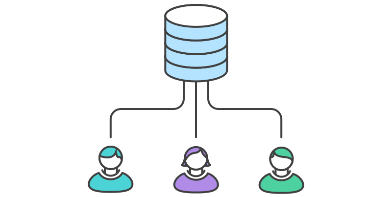
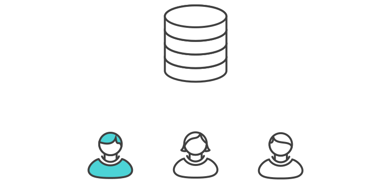

Git Work flow
1. Centralised Work Flow
Everybody clones the central repository

Ram Works on his feature

git status # View the state of the repo
git add <some-file> # Stage a file
git commit # Commit a file</some-file>
Mary Works on some feature

Ram publishes his feature

git push origin master
Mary tries to publish her feature

Error
error: failed to push some refs to '/path/to/repo.git'
hint: Updates were rejected because the tip of your current branch is behind
hint: its remote counterpart. Merge the remote changes (e.g. 'git pull')
hint: before pushing again.
hint: See the 'Note about fast-forwards' in 'git push --help' for details.
Mary rebases on top of Ram's commit(s)
git pull --rebase origin master
The --rebase option tells Git to move all of Mary’s commits to the tip of the master branch after synchronising it with the changes from the central repository, as shown below:
Merge Conflicts

# Unmerged paths:
# (use "git reset HEAD <some-file>..." to unstage)
# (use "git add/rm <some-file>..." as appropriate to mark resolution)
#
# both modified: <some-file>
Mary Resolves
git add <some-file>
git rebase --continue
If you get to this point and realize and you have no idea what’s going on, don’t panic. Just execute the following command and you’ll be right back to where you started before you ran.
git rebase --abort
Mary successfully publishes her feature

git push origin master